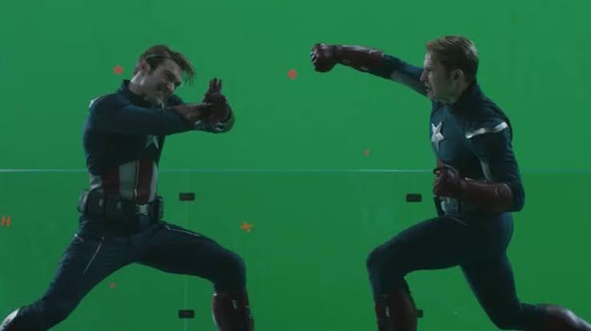

CGI, VFX, and Special Effects

Green Screen from the Marvel Movie: Avengers Endgame
A green screen is a solid colored backdrop used in video and photo production. It helps editors remove the background digitally through a process called chroma keying, allowing a new background or special effect to take its place.
Why is it Green?
- Skin Tones: Human skin tones sit in a reddish-orange color range, making bright green the furthest and most contrasting color away from human skin.
- Camera Sensors: Digital camera sensors contain more green pixels, allowing the camera to capture green with the highest amount of detail and least amount of noise.
- Easy Separation: Because green is rarely found in human skin or most everyday clothing, computer software can easily isolate and erase it without accidentally deleting the person in front of the camera.
What is it Used For?
- Movies and TV Shows: Placing actors into outer space, fantasy worlds, or fictional cities without leaving the studio.
- Weather Forecasts: Allowing news anchors and meteorologists to stand in front of moving weather maps and graphics.
- Content Creation & Streaming: Helping online video creators and gamers change their room background to a virtual set or game screen.
- Video Calls: Hiding a messy room during remote work meetings on virtual platforms.
___________________________________________________________________________________________
A blue screen in filming is a solid blue backdrop placed behind actors so that computers can digitally remove the blue color and replace it with a completely different background, a process called chroma keying. The plus signs and grid axes in the background are tracking markers used by visual effects software to track camera movement, rotation, and perspective.
What are Blue Screens and Why Use Them?
- Background replacement: They let filmmakers place actors in virtual or impossible locations—like outer space or a fantasy world—without leaving a studio.
- Less color spill: Blue reflects less light onto the actors than bright green, making it ideal for darker or nighttime scenes and for keeping edges (like hair) sharp.
- History: Blue screens were the original Hollywood standard before green screens became more common with digital video.
What are the Plus Signs and Axes For?
- Motion tracking: The plus (+) shapes, crosses, or grid lines act as fixed points of contrast on the wall.
- Matching camera moves: When the physical camera moves, pans, or zooms, the computer analyzes how those plus signs move across the frame.
- Placing 3D elements: This data allows digital artists to match the virtual background's perspective so that CGI objects look like they naturally exist in the scene.
______________________________________________________________________________________
How to studios hid Machinary
1. Careful Framing and Blocking (Pre-Planning)
Most equipment doesn't even need to be erased because it is kept completely out of the shot from the start.
- Smart Camera Angles: Directors and cinematographers plan the camera's field of view ahead of time. Extra gear, lights, and crew members stand just inches outside the camera's frame (often called hiding "out of frame" or behind pillars and walls).
- The Boom Mic Trick: If a microphone on a pole is hovering above actors, the sound crew practices moving it right at the edge of the frame so it never dips into the final picture.
2. Physical Set Tricks
Sometimes a scene makes it hard to hide equipment—like when filming in a room full of mirrors or glass windows. Studios use physical workarounds for this:
- Angling Mirrors: Crew members will tilt a mirror by just a fraction of a degree so it reflects the room without capturing the camera or the camera operator in the reflection.
- Fake Mirrors and Doubles: In complex shots, they might remove the glass entirely or use a double standing on the other side mimicking the actor's movements to fake a mirror reflection.
3. Digital Cleanup and AI Removal (Post-Production)
If a piece of heavy machinery, a safety cable, or a stray crew member accidentally gets caught on camera, visual effects artists step in:
- Clean Plates: If the camera is completely still on a tripod, the crew shoots an empty background plate with no gear. That clean image is pasted over the mistake.
www.reddit.com - Digital Paint and AI Tools: Just like erasing tracking markers, software tools (including AI-powered content-aware fill features) track the unwanted machinery across every frame and paint over it using textures from the surrounding background.
_______________________________________________________________________________________________
Apple Boxes
On professional film sets, they are an essential tool for the grip and camera departments. Here is how they work in practice:
- Adjusting Eye Lines: If one actor is noticeably shorter than another, or if a camera angle requires a specific composition during a conversation, the shorter actor will stand on an apple box to balance out the height difference.
- Standard Sizes: They come in a set of standard measurements so crew members can stack or mix them to get the exact height needed:
- Full Apple: ~8 inches tall
- Half Apple: ~4 inches tall
- Quarter Apple: ~2 inches tall
- Pancake (Eighth Apple): ~1 inch tall
- Multipurpose Use: Aside from adjusting height for actors, crew members frequently flip them over to use as portable stools to sit on between takes or to prop up heavy equipment on uneven ground.
___________________________________________________________________________________________
Motion Tracking and Matchmoving: The Invisible Engine of Visual Effects
Motion tracking (frequently called matchmoving, camera tracking, or a 3D camera solve) is the cornerstone technology that allows visual effects artists to anchor computer-generated (CG) elements into live-action footage. Without it, any digital creation—whether it is a towering superhero, a soaring spaceship, or a destructive explosion—would look like a flat sticker sliding around awkwardly on the screen.
1. What is Motion Tracking?
At its core, motion tracking is the process of reverse-engineering a camera's physical movement in the real world and recreating that exact movement inside a 3D computer environment.
When a camera pans, tilts, zooms, or tracks backward on a physical film set, it shifts perspective, alters focal lengths, and changes the scale of every object in view. Motion tracking software analyzes the recorded video frame-by-frame, measures the parallax shifts of background objects, and builds a virtual camera that mimics the real camera down to the exact millimeter.
2. The Mechanics: How the Technology Works
The motion tracking pipeline relies on advanced mathematical algorithms and distinct visual reference points:
- Identifying Feature Points: Algorithms scan every frame for high-contrast areas—such as corners, edges, texture variations, or physical markers placed on set.
- Calculating Parallax: As the camera moves, objects closer to the lens shift faster across the frame than distant background objects. The software uses these differences in speed (parallax) to calculate depth and distance.
- Solving the Camera Path: By plotting dozens or hundreds of tracking points over time, the software computes a "camera solve," generating a 3D point cloud and a synchronized virtual camera path.
3. The Different Types of Motion Tracking
Depending on what needs to be added or modified in a shot, VFX artists use different tiers of tracking:
- 2D Point Tracking: Focuses on tracking a single point across a flat plane. It is typically used for simple tasks like stabilizing shaky footage, attaching a 2D graphic to a moving sign, or locking a censor blur over a face.
- Planar Tracking: Specialized software (such as Mocha AE) tracks entire flat surfaces—like a brick wall, a whiteboard, or a smartphone screen—even when they warp, tilt, or rotate, making it ideal for screen replacements.
- 3D Camera Tracking / Matchmoving: Fully reconstructs three-dimensional camera movement, focal length, and lens distortion. This is mandatory when adding massive 3D objects or characters that must interact realistically with a physical set.
4. Why Tracking Markers Matter on Set
While modern AI software can sometimes track natural features like corners of rooms, brick patterns, or tree branches, blockbuster productions rely heavily on physical tracking grids.
- High-Contrast Targets: Bright pink, white, or yellow crosshairs (+ or X shapes) are distributed across green and blue screens.
- Guiding the Software: These markers give tracking algorithms unambiguous, razor-sharp points of reference. This drastically reduces software error rates, prevents tracking drift, and ensures that digital monsters or superheroes land precisely where actors expect them to be.
__________________________________________________________________________________________
Motion Capture (MoCap): Transforming Live Performances into Digital Characters
While motion tracking focuses on analyzing cameras or objects in a scene, motion capture (often called MoCap or performance capture) is the technology used to record the physical movements, expressions, and actions of a real human actor and map them directly onto a 3D computer-generated character.
It is the secret behind bringing legendary characters to life—from Gollum in The Lord of the Rings and Thanos in Avengers: Endgame to Na'vi characters in Avatar.
1. What is Motion Capture?
Motion capture bridges the gap between live-action acting and 3D animation. Instead of an animator manually drawing or keyframing every single step, jump, or twitch frame-by-frame, an actor physically performs the scene wearing specialized gear. The technology records that physical data and translates it onto a digital skeleton, allowing a CGI monster, alien, or superhero to move with organic human nuance and weight.
2. How the MoCap Process Works
The production workflow for motion capture involves distinct physical and digital stages:
- The Performance Stage: The actor steps onto a specialized soundstage (often surrounded by dozens of specialized cameras) wearing a tight MoCap suit
- Recording Data, Not Video: The system records movement data, not high-resolution video. The output is a digital wireframe skeleton moving through a 3D coordinate grid.
- Retargeting and Animation: Software takes the actor's joint rotations and applies ("retargets") them to the digital 3D model, ensuring that the CGI character's limbs bend and react precisely like the human actor's did.
3. The Different Types of Motion Capture Systems
Studios use different methods to record movement depending on budget, mobility, and accuracy needs:
- Optical Passive Systems (Most Common): Actors wear tight suits covered in small, spherical balls coated in retroreflective material. A ring of infrared cameras positioned around the room bounces invisible light off these markers to track their exact 3D positions.
- Optical Active Systems: Instead of passive reflective balls, these suits use miniature battery-powered LEDs that blink in specific patterns. This helps the computer instantly identify which marker is which, reducing data mix-ups.
- Inertial MoCap Systems: Rather than relying on external cameras pointing at a stage, the actor wears a suit embedded with miniature inertial sensors (accelerometers and gyroscopes). This allows actors to perform outdoors or on location without a massive camera rig.
- Markerless AI Systems: Modern software utilizes computer vision and AI algorithms to extract skeletal movement directly from standard video feeds, making performance capture more accessible for indie creators without expensive studio suits.
4. From Motion Capture to Performance Capture
Early technology only tracked basic body movements (running, jumping, fighting). Modern blockbusters use performance capture, which expands the technology to capture subtle emotional details:
- Facial Tracking: Actors wear lightweight head rigs with a tiny camera pointed right at their face, tracking micro-expressions, lip movements, and eye blinks.
- Finger Tracking: Specialized gloves or marker setups track hand gestures, allowing digital characters to pick up objects or make delicate hand gestures naturally.
__________________________________________________________________________________________
1. Virtual Production and LED Volumes (The StageCraft Revolution)
Instead of relying entirely on green screens or shooting on location, modern blockbusters (like The Mandalorian or Marvel features) increasingly use Virtual Production inside massive, enclosed LED stages (often called "Volumes").
- How It Works: The traditional green screen is replaced by massive curved LED walls and ceilings that display real-time, photorealistic 3D environments rendered via game engines like Unreal Engine.
- In-Camera Visual Effects (ICVFX): Because the background is actually glowing and displaying the digital world behind the actors in real-time, the camera captures the correct perspective automatically.
- Reflections and Lighting: Unlike a green screen that casts green color reflections onto actors, an LED volume projects realistic lighting, reflections, and shadows directly onto the actors' costumes, skin, and props, making them look like they are truly standing inside an alien landscape or a futuristic city.
2. Sound Design, Foley, and Audio Post-Production
The famous filmmaking saying states that "audio is 50% of the movie." Audiences will often forgive a slightly imperfect visual effect, but they will immediately reject bad sound. Sound design is the art of building an immersive auditory world from scratch.
- Production Sound vs. Post-Production Audio: On set, sound mixers capture dialogue using lavalier (clip-on) mics and boom mics. However, most background noise is unusable, so almost all sound effects, footsteps, and punches are re-created in post-production.
- Foley Artistry: Foley artists work in specialized recording studios equipped with pits of gravel, concrete, dirt, and various shoes. They watch the film frame-by-frame and perform physical actions—like walking, dropping keys, or sliding leather jackets—to sync custom sound effects with the actors' movements.
- Sci-Fi Sound Synthesis: Sci-fi sounds (like laser cannon zips, spaceship engines, and plasma hums) don't exist in reality. Sound designers synthesize them by blending organic elements (like slowing down the screech of a metal gate or recording heavy-duty electrical equipment) with digital synthesizers.
3. Color Grading and Color Correction
Once editing and VFX are complete, footage looks flat and desaturated (often shot in "Log" color profiles to preserve maximum shadow and highlight detail). Color grading is the process of stylizing the look, mood, and emotion of a film through color.
- Primary Color Correction: The colorist adjusts the overall exposure, contrast, white balance, and shadows to ensure continuity between scenes shot on different days under different lighting conditions.
- The Teal and Orange Blockbuster Look: A hallmark of modern superhero and action cinema is the complementary color scheme where shadows lean heavily toward cool teal/blue tones while human skin tones and highlights are pushed toward warm orange. This creates maximum visual contrast, making characters pop off the background.
- Mood Setting: Color grading can completely change the emotional context of a scene—shifting a bright sunny day into a grim, desaturated post-apocalyptic wasteland or turning a cool blue night into a high-stakes cyberpunk thriller.
4. Digital Pyrotechnics, Lasers, and Particle Simulations
Real explosions, fireballs, and energy projectiles are dangerous and expensive to pull off physically, so studios rely heavily on digital particle and fluid simulations.
- Particle Systems: Software emits millions of individual points (particles) that obey simulated physical laws like gravity, wind resistance, and velocity. These are used to create sparks, glowing laser trails, smoke plumes, and magic spells.
- Fluid Dynamics (Fire and Smoke): Simulating explosions requires solving complex mathematical equations (such as Navier-Stokes equations) to model how hot gases expand, how smoke billows upward, and how fire flickers and casts light.
- Layering and Compositing: A single explosion in a Marvel movie is rarely just one video file. It is broken down into separate artistic passes—a core fire layer set to an "Add" blend mode for intense luminosity, a dark smoke layer with lower opacity to simulate soot, and a physical debris layer of flying shrapnel that interacts with the live-action environment.
___________________________________________________________________________________________
SOFTWARES
Check Here for Blender: https://docs.blender.org/manual/en/latest/getting_started/about/index.html
Check Here for Da Vinci: https://documents.blackmagicdesign.com/UserManuals/DaVinciResolveReferenceManual.pdf?_v=1783666810000
Check Here for Nuke: https://learn.foundry.com/nuke/content/user_guide.html
Check Here for Zbrush: https://help.maxon.net/zbr/en-us/Content/html/user-guide/user-guide.html
Check Here for Houdini: https://www.sidefx.com/docs/
Check Here for Mocha: https://borisfx.com/documentation/mocha/2026.5.0/
Check Here for Arnold: https://help.autodesk.com/view/ARNOL/ENU/?guid=arnold_user_guide_ac_arnold_user_guide_html
Check here for Vray: https://documentation.chaos.com/page/vray
Check here for Unreal Engine: https://dev.epicgames.com/documentation/unreal-engine/unreal-engine-5-8-documentation